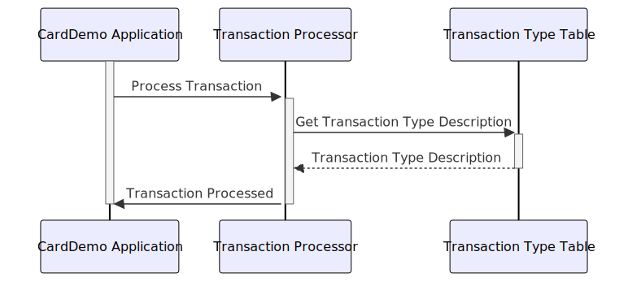

–CONTEÚDO TRADUZIDO– Gerado em: 1º de outubro de 2024
Título do Documento: Especificação da Estrutura de Dados do Tipo de Transação CardDemo
Descrição Resumida:
Este documento descreve a estrutura e o propósito da estrutura de dados TRAN-TYPE-RECORD dentro do aplicativo CardDemo. Essa estrutura é crucial para categorizar e descrever diferentes tipos de transações com cartão de crédito, garantindo processamento e relatórios precisos.
Histórias do Usuário: Como analista de dados, preciso identificar e entender facilmente os tipos de transações com cartão de crédito que estão sendo processadas para que eu possa realizar análises e relatórios precisos.
Épico Relacionado: 4 - Processamento de Transações
Requisitos Funcionais:
TRAN-TYPE-RECORD) para armazenar informações sobre o tipo de transação.TRAN-TYPE) para representar o tipo de transação.TRAN-TYPE-DESC) para o tipo de transação.Requisitos Não Funcionais:
Critérios de Aceitação:
TRAN-TYPE-RECORD está definida no sistema.TRAN-TYPE-RECORD para categorizar e armazenar informações sobre o tipo de transação.Melhorias de Código:
Melhorias de Segurança:
Diagrama Conceitual:
–Made by “Smart Engineering” (by Compass.UOL)–